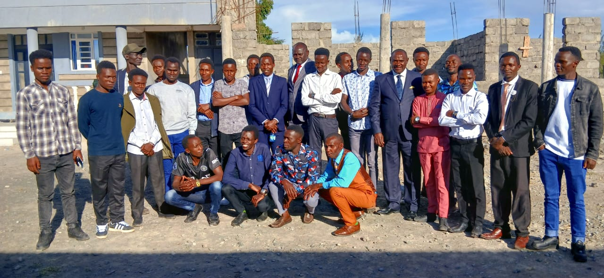
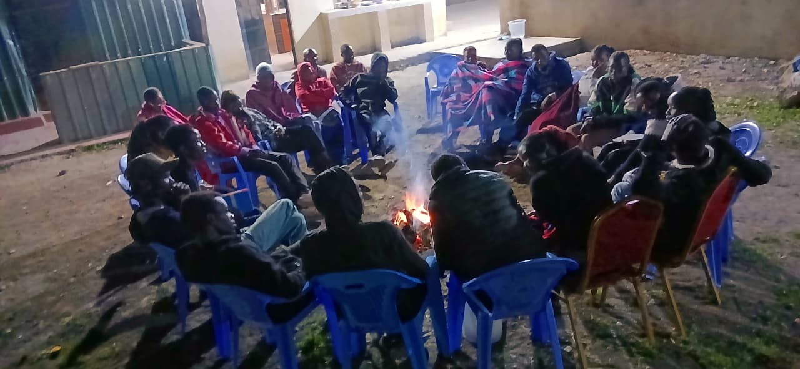
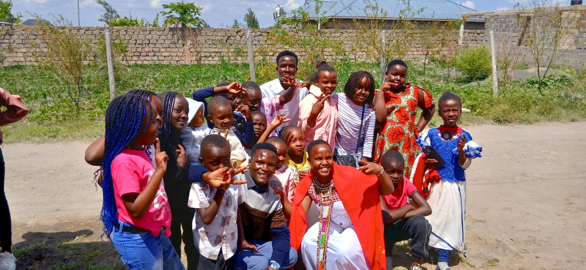
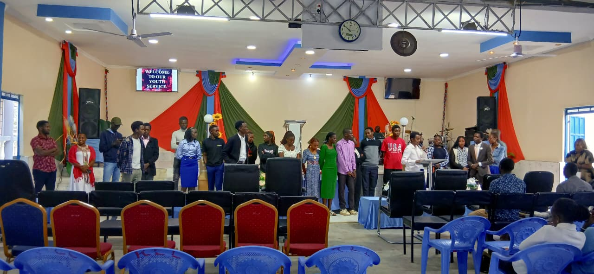

About the Mission
The Joska Mini Mission was a focused outreach aimed at spreading the Gospel, strengthening believers, and reaching out to the local community. Through teamwork and dedication, lives were touched and transformed.
Activities
- Morning Devotions
- Door to Door Evangelism
- Evening Crusades
- Prayer Sessions
- Children Ministry
Photo Highlights




